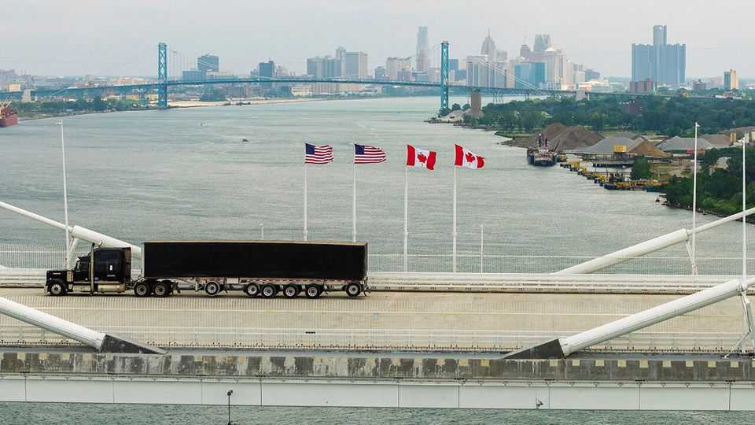
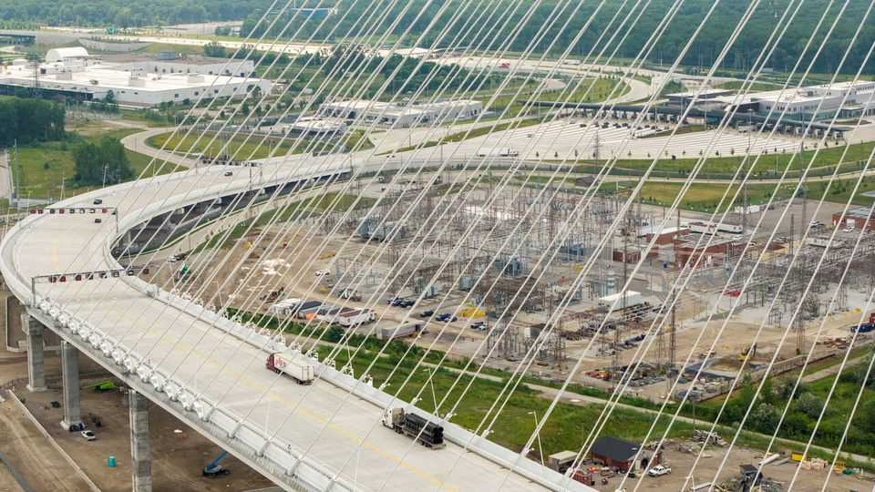

Donald Trump’s bullying of Canada is endless
Canadians are starting to turn against Mark Carney’s pragmatic response

Aug 13th 2026
The Gordie Howe International Bridge is a 2.5km-long monument to the perils of appeasing Donald Trump. Canada footed the entire bill of C$6.4bn ($4.6bn) for the gleaming new span over the Detroit river to the United States. But America’s president threatened for months to block its opening, relenting only when the United States got a cut of the toll revenues. Traffic at last began to flow in late July. Canadians cringed at Mark Carney’s evasive explanation for the shakedown. Mr Trump then rewarded his compliance by announcing new tariffs of 50% on a range of goods imported into the United States from its northern neighbour.
If the new tariffs come into force as expected on August 19th, Canada will be the first country to be subjected to tariffs under Section 338 of the Smoot-Hawley Tariff Act, passed in 1930, allowing the American president to respond to perceived discrimination over trade. Tariffs under that act, unlike the emergency duties struck down by the US Supreme Court in February, need no congressional approval. “This looks a lot like the future of Donald Trump’s trade policy because it gives him flexibility,” says Eric Miller, head of the Rideau Potomac Strategy Group, a trade consultancy in Washington.
Mr Trump is using this freedom to put tariffs on $20bn of exports to the United States, 5% of the total sent south every year. These would pile up next to other duties that have hobbled Canada’s car, steel, aluminium, wood and copper industries. Crucially, and unlike the emergency tariffs imposed last year, the new ones also hit goods covered by the United States-Mexico-Canada Agreement (USMCA) on trade.
Mr Carney may think he has room to negotiate. He needs it. He was elected last year partly because he stood up to Mr Trump, promising to get “an even better deal” than the USMCA. Yet concession has followed concession. Canada dropped its digital-services tax on mostly American social-media giants, then ended most of its retaliatory tariffs and a different tax on streamers such as Netflix. Mr Trump’s response has been indifference. “We don’t need them,” he said on July 28th ahead of negotiations over the USMCA with Mexico as well as Canada. “The deal is important for them. It’s not important for us.”
This bullying appears to be hurting Mr Carney at home, particularly over the Gordie Howe embarrassment. Canada agreed to pay for the bridge in 2012 as long as it took all toll revenue until costs were recovered. After Mr Trump enforced a new deal, Mr Carney claimed repeatedly that Canada’s costs would still be paid first.
A crowing tweet from Howard Lutnick, the US commerce secretary, made clear it was untrue. For the first 15 years of operation the United States will take half of net revenue, after operating costs but before debt repayment. This will cost Canada some C$300m. The share of Canadians who say they feel confident that Mr Carney can land a good deal with Mr Trump fell by eight percentage points between April and July, according to Angus Reid, a pollster.

The same poll shows Canadians are still outraged by Mr Trump’s tariffs; almost two-thirds want Mr Carney to hit back with tariffs of his own. But that would only increase Canada’s pain. “You’ve got to realise that punching the bully back here is also going to punch the Canadian people in the guts,” says Justin Wolfers of the University of Michigan. Mr Carney has sent negotiators to Washington to intensify discussions to extend USMCA. Mr Trump’s team declined to do this in early July; there is still a chance he could agree. Mr Carney says he won’t retaliate by playing Canada’s strongest card: curbing exports of energy.
In 1930 Canada did not show Mr Carney’s level of forbearance. It retaliated against Smoot-Hawley pre-emptively, launching tariffs of its own on American imports before the bill had even become law. Many other countries retaliated too. Within four years the nominal value of world trade had fallen by two-thirds and the global depression had hit its nadir.
Unpleasant as it is, Canadians should hope that Mr Carney’s resolve holds. And everyone else must hope that other world leaders are equally courageous when Mr Trump turns his new tariffs on them. ■